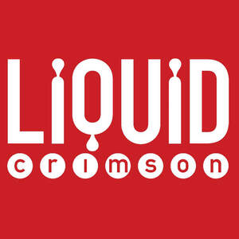

Trade Mark Journal No.2025/032 8 August 2025
UK00004239702 25 July 2025 (9,35,38,41,42)

- Class 9
- Interactive graphics screens; Animated films; Computer games; Interactive entertainment computer software for video games; Electronic publications, downloadable, relating to games and gaming; Downloadable interactive entertainment software for playing video games; Computer games entertainment software; Downloadable interactive entertainment software for playing computer games; Computer programmes for playing games; Video games software; Game programs for arcade video game machines; Downloadable computer games; Games software for use with computers; Interactive multimedia software for playing games; Computer programs for playing games; Gaming software; Games software; Computer game software for use with on-line interactive games; Downloadable information relating to games and gaming; Computer games software; Video games programs [computer software]; Computer games programs; Computer gaming software; Video game computer programs; Video and computer game programs; Virtual reality games software; Computer programs for video and computer games; Computer game programs; Programs (Computer game -); Computer games programs [software]; Computer games programmes [software]; Computer games of chance; Computer game software; Computer game programmes; Computer video game software; Video games [computer games] in the form of computer programs recorded on data carriers; Computer application software featuring games and gaming; Interactive computer game programs; Downloadable computer game programs; Games software for use with video game consoles; Downloadable computer game software; Computer game software, downloadable; Computer game software, recorded; Recorded computer game software; Computer games programs downloaded via the internet [software]; Interactive multimedia computer game programs; Interactive multimedia computer games programmes; Computer game software downloadable from a global computer network; Computer games programmes downloaded via the internet [software]; Downloadable software, namely virtual clothing for use in computer games; Computer game software for use on mobile devices; Computer games programmes downloaded via the internet; Software programs for video games; Interactive multimedia computer game program; Downloadable computer game software via a global computer network and wireless devices; Computer software that permits games to be played; Downloadable computer graphics; Computer software; Computer software downloadable from global computer networks; Computer software for entertainment; Interactive computer software; Computer software programs; Computer programming software; Game software; Computer game software for use on mobile and cellular phones; Podcasts; Downloadable podcasts; Videocasts; Downloadable videocasts; Downloadable video recordings featuring music; Downloadable video recordings; Pre-recorded audio tapes featuring games; Audio recordings; Downloadable video game programs; Digital audio tapes; Downloadable video game software; Downloadable music sound recordings; Downloadable videos.
- Class 35
- Marketing; Advertising and marketing; Advertising and marketing consultancy; Promotional marketing; Influencer marketing; Advertising and marketing services; Affiliate marketing; Product marketing; Marketing consultancy; Marketing consulting; Digital marketing; Advertising, marketing and promotion services; Marketing, advertising and promotion services; Advertising, marketing and promotional services; Advertising, promotional and marketing services; Marketing, advertising, and promotional services; Marketing research; Online marketing; Marketing services; Internet marketing; Business marketing consultancy; Marketing forecasting; Financial marketing; Referral marketing; On-line advertising and marketing services; Marketing studies; Targeted marketing; Marketing analysis; Business marketing services; Advertising copywriting; Distribution of advertising, marketing and promotional material; Marketing information; Investigations of marketing strategy; Direct marketing; Promotion, advertising and marketing of on-line websites; Planning of marketing strategies; Marketing advice; Direct marketing consulting; Consultancy services relating to advertising, publicity and marketing; Marketing research services; Dissemination of advertising, marketing and publicity materials; Event marketing; Marketing assistance; Research services relating to advertising and marketing; Marketing management advice; Design of marketing surveys; Database marketing; Marketing agency services; Promotion [advertising] of business; Business marketing consulting services; Development of marketing concepts; Advertising, marketing and promotional consultancy, advisory and assistance services; Marketing plan development ; Consultancy services in the field of affiliate marketing; Direct marketing services; Copywriting for advertising and promotional purposes; Trade marketing [other than selling]; Marketing analysis services; Advice in the field of business management and marketing; Modeling for advertising or sales promotion; Consultancy relating to marketing; Creative marketing plan development services; Modelling for advertising or sales promotion; Business marketing consultation services; Modeling services for advertising or sales promotion; Recruitment services for sales and marketing personnel; Consultancy regarding advertising communications strategy; Marketing advisory services; Development of marketing strategies and concepts; Advertising services for the promotion of e-commerce; Planning services for marketing studies; Business advice relating to strategic marketing; Consulting services in the field of Internet marketing; Marketing research and analysis; Marketing research or analysis; Providing marketing consulting in the field of social media; Business advice relating to marketing; Marketing (Business advice relating to -); Marketing consultation services; Preparation of marketing surveys; Consumer profiling for commercial or marketing purposes; Advertising and marketing services provided by means of social media; Professional consultancy relating to marketing; Advertising; Market research and marketing studies; Advertising and marketing services provided via communications channels; Analysis of marketing trends; Business consultancy services relating to the marketing of fund raising campaigns; Providing business marketing information; Advertising planning; Brand creation services (advertising and promotion); Consulting services relating to marketing; Developing promotional campaigns for business; Publicity and sales promotion services; Advertising and marketing services provided by means of blogging; Providing advice in the field of business management and marketing; Copywriting; Advertising and promotion services; Marketing in the framework of software publishing; Consultancy relating to demographics for marketing purposes; Marketing services in the field of travel; Advertising research; Consultancy regarding advertising communication strategies; Publicity and sales promotion; Rental of all publicity and marketing presentation materials; Advertising and promotional services; Promotional and advertising services; Promotional advertising services; Advertising and publicity; Publicity and advertising; Conducting of marketing studies; Conducting marketing studies; Advertising and publicity services; Search engine marketing services; Advice relating to marketing management; Administration relating to marketing; Sales promotion using audiovisual media; Telephone marketing services [not selling]; Modelling and models for advertising or sales promotion; Consultancy relating to business advertising; Preparation of marketing plans; Estimations for marketing purposes; Business advice relating to marketing management consultations; Consulting in sales techniques and sales programmes; Analysis relating to marketing; Recruitment advertising; Marketing services in the field of web site traffic optimization; Market research for advertising; Development of promotional campaigns; Planning services for advertising; Advertising research services; Development of advertising concepts; Preparation of advertising campaigns; Preparation of reports for marketing; Digital advertising services; Sales promotion; Design of advertising brochures; Advisory services relating to marketing; Organisation of customer loyalty programs for commercial, promotional or advertising purposes; Promotion of goods through influencers; Blogger outreach services; Advertising services to create corporate and brand identity; Brand positioning; Brand strategy services; Advertising services to create brand identity for others; Promotional marketing services using audiovisual media; Brand positioning services; Promotion [advertising] of travel; Evaluating the impact of advertising on audiences; Advertising services to promote public awareness of social issues; Analysis of the public awareness of advertising; Providing business information in the field of social media; Rental of advertising time on communication media; Consultancy regarding public relations communications strategy; Promotional management of celebrities; Advertising services to promote public awareness in the field of social welfare; Consultancy relating to the organisation of promotional campaigns for business; Media relations services; Development of business organization strategies relating to corporate social responsibility; Organisation of promotions using audiovisual media; Marketing services provided by means of digital networks; Advertising services of a radio and television advertising agency; Advertising services for the literary industry; Brand evaluation services; Organisation of promotions using audio-visual media; Advertising via electronic media and specifically the internet; Business networking; Market campaigns; Dissemination of advertising via online communications networks; Direct market advertising; Consultancy and advisory services in the field of business strategy; Development and implementation of marketing strategies for others; Marketing services relating to esports events; Developing promotional campaigns for businesses; Strategic business consultancy; Advertising in the popular and professional press; Advertising, promotional and public relations services; Marketing through product placement for others in virtual environments; Advertising agency services; Advertising services provided by a radio and television advertising agency; Consultancy regarding public relations communication strategies; Brand creation services; Dissemination of advertising for others via an on-line communications network on the internet; Online advertisements; Advertising and advertisement services; Radio advertising and commercials; Advertising of cinemas; Advertisement billboards (Rental of -); Compilation of advertisements; Television advertising; Classified advertising; Newspaper advertising; Banner advertising; Online advertising; Leasing of advertising billboards; Dissemination of advertisements and of advertising material [flyers, brochures, leaflets and samples]; Magazine advertising; Arranging of advertising in cinemas; Advertising in periodicals, brochures and newspapers; Compilation of advertisements for use on the internet; Classified advertising services; On-line advertising; Advertising agencies; Cinema advertising; Composing advertisements for use as webpages; Post-production editing of advertising or commercials; Dissemination of advertisements; Advertising services; Online advertising services; Displaying advertisements for others; Radio and television advertising; Production of television and radio advertisements; Advertising, including on-line advertising on a computer network; Production of advertising matter and commercials; Compilation of advertisements for use as web pages on the Internet; Compilation of advertisements for use on internet web pages; Advertisement and publicity services by television, radio, mail; Distribution of advertising leaflets; Design of advertising flyers; Advertising for others; Composing advertisements for use as web pages; Advertisements (Preparing of -); Distribution of advertising brochures; Preparation of advertisements; Services of advertising agencies; Promotion [advertising] of concerts; Distribution of advertising announcements; Advertising material (Updating of -); Updating of advertising material; Updating advertising material; Advertising on the Internet for others; Organisation of exhibitions and events for commercial or advertising purposes; Organising exhibitions for commercial or advertising purposes; Advertisement for others on the Internet; Production of advertising films; Organisation of events for commercial and advertising purposes; Advertising flyer distribution; Placing advertisements for others; Advertising flyer distribution for others; Press advertising consultancy; Outdoor advertising; Provision of computerised advertising services; Online advertising on computer networks; Exhibitions for commercial or advertising purposes; Arrangement of advertising; Advertising via the Internet; Rental of advertising material; Production of television commercials; Production of radio commercials; Production of commercials; Cinematographic film advertising; Production of cinema commercials; Producing promotional videotapes, video discs, and audio visual recordings; Production of video recordings for advertising purposes; Video recordings for advertising purposes (Production of -); Film directing of advertising films; Production of video recordings for marketing purposes; Video recordings for marketing purposes (Production of -); Production of sound recordings for advertising purposes; Production and distribution of radio and television commercials.
- Class 38
- Podcasting; Transmission of podcasts; Videocasting; Podcasting services; Audio broadcasting; Streaming audio and video material on the Internet; Broadcasting of video and audio programming over the Internet; Video, audio and television streaming services; Video broadcasting; Transmission of videocasts; Streaming of audio material on the internet; Audio and video broadcasting services provided via the Internet; Streaming of video material on the internet; Digital audio broadcasting; Audio, video and multimedia broadcasting via the Internet and other communications networks.
- Class 41
- Production of video films; Conference services; Organisation of meetings and conferences; Organisation of seminars and conferences; Organising of education conferences; Arranging of conferences; Arranging of educational conferences; Organisation of conferences, exhibitions and competitions; Arranging and conducting conferences and seminars; Arranging and conducting of conferences and congresses; Organising of meetings in the field of entertainment; Organisation of conferences related to entertainment; Organising of conferences for educational purposes; Arranging of conferences relating to business; Arranging, conducting and organisation of conferences; Arranging of conferences relating to trade; Arranging of conferences relating to education; Arranging and conducting of conferences; Conferences (Arranging and conducting of -); Arranging and conducting conferences; Special event planning consultation; Arranging of workshops and seminars; Arranging and conducting of meetings in the field of entertainment; Presentation of live entertainment events; Hosting [organising] awards; Special event planning; Special effects animation services for film and video; Production of animation; Production of animated cartoons; Animation production services; Production of movie special effects; Services in the production of animated motion picture entertainment; Production of animated motion pictures; Script writing services; Video film production; Film production, other than advertising films; Services in the production of animated motion pictures and television features; Services for the production of entertainment in the form of film; Entertainment services in the nature of video games; Video game entertainment services; Audio, film, video and television recording services; Production of pre-recorded video films; Recording, film, video and television studio services; Audio and video recording services; Providing audio or video studios; Exhibition of video film sound tracks; Audio and video editing services; Post-production editing services in the field of music, videos and film; Dubbing; Subtitling; Film and video tape film production; Voice training; Production of video and audio recordings; Sound recording and video entertainment services; Audio recording studio services; Providing audio or video studio services; Production of pre-recorded cinema films; Video tape film production; Audio and video production, and photography; Production of sound and video recordings; Recording studio services for television; Production of animated cine-film clips; Video recording services; Editing of video recordings; Sound recording studio services; Cinematographic film studio services; Hire of video recordings; Audio recording and production services; Audio recording and production; Video and DVD film production; Recording studio services for films; Film studio services; Audio recording services; Audio, video and multimedia production, and photography; Dubbing services; Studio services for the recording of videos; Recording studio services for videos; Production of video recordings; Television, radio and film production; Dubbing for movies; Provision of video recording studio services; Film editing; Services for the showing of video recordings; Video editing; Sound recording studios; Editing of audio recordings; Film editing (Cinematographic -); Production (Videotape film -); Videotape film production; Film directing, other than advertising films; Music recording studio services; Video tape editing; Editing or recording of sounds and images; Movie studio services; Production of audio recordings; Production of video and/or sound recordings; Video production; Sound recording services; Audio tape production services; Operation of video and audio equipment for the production of radio and television programs; Video production services; Audio production; Video tape production; Entertainment services for sharing audio and video recordings; Film editing (Photographic -); Recording studio services; Studio services (Recording -); Production of podcasts; Provision of entertainment via podcast; Creation [writing] of podcasts; Provision of entertainment via podcasts; Video taping; Recording of music; Music recording.
- Class 42
- Research in the field of social media; Animation and special-effects design for others; Web portal design; Rendering of computer graphics (digital imaging services); Design and graphic arts design for the creation of web pages on the Internet; Graphic design for the compilation of web pages on the internet; Programming of web pages; Design, creation and programming of web pages; Programming of computer animations; 3D scanning services; Design of web pages; Computer-aided design of video graphics; Computer graphics design services; Design and graphic arts design for the creation of web sites; Hosting of digital content online; Creating electronically stored web pages for online services and the internet; Computer graphics services; Web page design services; Internet web site design services; Design and creation of homepages and web pages; Design of post card cartoon characters; Programming of customized web pages; Web site design consultancy; Web site design and creation services; Compilation of web pages for the Internet; Web site design; Web site design services; Computer programming of video games; Development of video and computer games; Computer programming of video and computer games; Computer programming of computer games; Programming of video game software; Programming of computer game software; Design of computer game software; Development of computer game software; Computer programming; Programming (Computer -); Computer programming and maintenance of computer programs; Computer programming for the internet; Hosting of podcasts; Hosting of videocasts.
LIQUID CRIMSON LIMITED
Representative: Edward Perkins